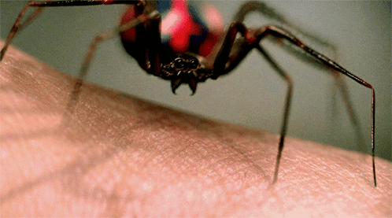
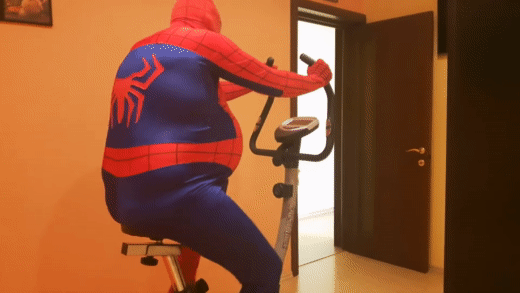
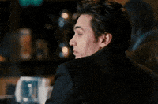
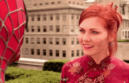
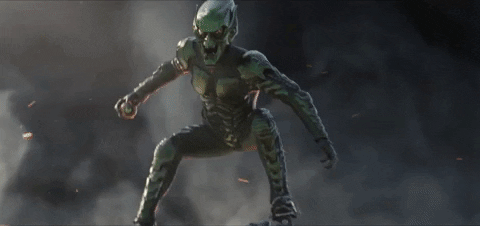
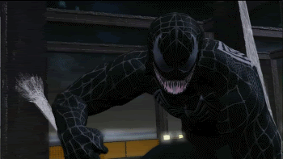

Origem
Ele foi mordido por uma
aranha e recebeu seus poderes.
Poderes

Os seus poderes são superforça, superagilidade e habilidade de disparar teias sintéticas de aranha através de mecanismos nos pulsos.
Homem aranha obeso pedalando em plena luz do dia!!!
Que lindo!
Aliados
Osborn
Ele vira um aliado após o terceiro filme, porém acaba morrendo.
Mary Jane
Em teoria no final do primeiro filme ela já reconhece que ele é o homem aranha.
Vilões
Duende Verde
Pai do Harry Osborn que após um erro em um projeto se torna o duende verde.
Venom
um mutante desequilibrado, sádico e monstruoso conhecido como Venom, equipado com o mesmo traje e poderes do Homem-Aranha.